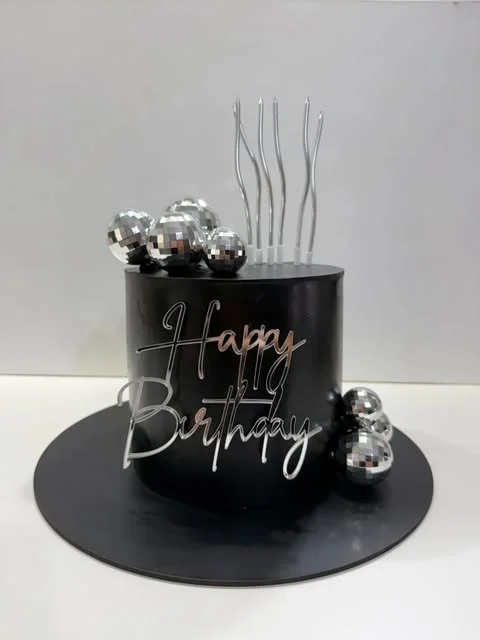

Retiro en Temperley · Lomas de ZamoraTortas personalizadas en
Lomas de Zamora
Pastelería Artesanal · Diseños Únicos · Zona Sur GBA
Pedir presupuesto por WhatsAppTortas artesanales con retiro en Temperley para vecinos de lomas
Nuestro taller está en Temperley, a minutos de Lomas de Zamora. Hacemos tortas para cumpleaños, 15 años, eventos y mesas dulces completas.
Tortas 100% personalizadas
Infantiles, gaming, fútbol, elegantes. Diseñamos según tu idea. Rellenos premium: dulce de leche, Oreo, ganache, Bon o Bon.
Retiro para Lomas de Zamora y Banfield
Coordinamos día y horario. También podés retirar en Temperley.
5 estrellas en Google
Elaboración artesanal por pedido. Seña del 50% para confirmar.
Algunas tortas que hicimos en nuestro taller de Temperley.


Preguntas frecuentes
¿Cómo es el retiro desde Lomas de Zamora?
Nuestro taller está en Temperley, a minutos del centro de Lomas de Zamora (fácil acceso por Av. Alsina o Av. Almirante Brown). Coordinamos día y horario para el retiro.
¿Cuánto cuesta una torta?
Depende del diseño, tamaño y rellenos. Pedí presupuesto sin compromiso por WhatsApp.
¿Qué rellenos tienen?
Dulce de leche, Oreo, ganache, Bon o Bon, Marroc, Block, Bariloche, Cookies. Buttercream de vainilla, chocolate o frutilla.